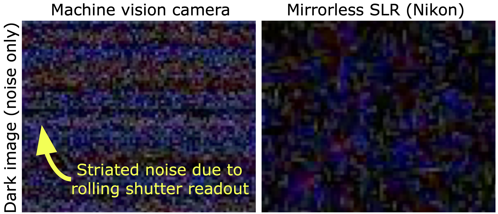
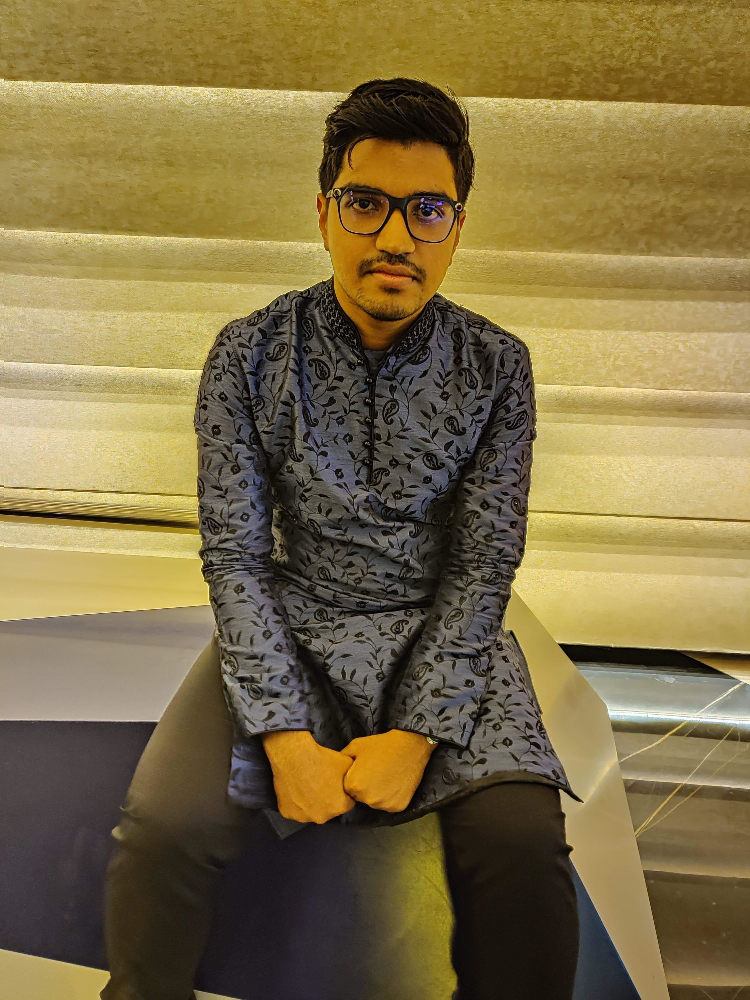

Denoising diffusion models have achieved state-of-the-art performance in image restoration by modeling the process as sequential denoising steps. However, most approaches assume independent and identically distributed (i.i.d.) Gaussian noise, while real-world sensors often exhibit spatially correlated noise due to readout mechanisms, limiting restoration quality in practice. We introduce Correlation Aware Restoration with Diffusion (CARD), a training-free extension of DDRM that explicitly handles correlated Gaussian noise. CARD first whitens the noisy observation, converting the noise into an i.i.d. form. The diffusion restoration steps are then replaced with noise-whitened updates, which inherit DDRM's closed-form sampling efficiency while enabling restoration under correlated noise. To emphasize the importance of addressing correlated noise, we contribute CIN-D, a novel correlated noise dataset captured across diverse illumination conditions to evaluate restoration methods on real rolling-shutter sensor noise. This dataset fills a critical gap in the literature for experimental evaluation with real-world correlated noise. Experiments on standard benchmarks with synthetic correlated noise and on CIN-D demonstrate that CARD consistently outperforms existing methods across denoising, deblurring, and super-resolution tasks.

Overall framework of CARD. CARD is a two-step training-free approach to solving image-based inverse problems corrupted by correlated noise, as often found in real cameras. In Step 1, we whiten the measurement using the estimated covariance matrix \(\Sigma^{-1/2}\), converting correlated noise into an equivalent i.i.d. form: \(\tilde{\mathbf{y}} = \Sigma^{-1/2}\mathbf{y},\ \tilde{H} = \Sigma^{-1/2}H\). In Step 2, we apply standard DDRM updates in this whitened measurement space using the singular values of \(\tilde{H}\), inheriting DDRM's closed-form sampling efficiency without any retraining.

Correlated noise in real cameras. Modern digital cameras, particularly those equipped with rolling shutter CMOS sensors, exhibit significant spatially correlated noise visible in dark frames (images captured with the lens cap on). This inter-pixel correlation — visible as striated banding patterns — is not modeled by standard i.i.d. Gaussian assumptions, and degrades the performance of existing restoration methods. This observation directly motivates CARD.

Example images from CIN-D dataset. We contribute CIN-D (Correlated Image Noise Dataset), captured using a FLIR Blackfly S BFS-U3-63S4C-C color camera. CIN-D contains 400 images from 100 scenes at three noise levels (low, medium, high) along with a long-exposure ground-truth image and dark frames for covariance estimation. Scenes span fluorescent-lit indoor and outdoor daylight/nighttime environments. To our knowledge, CIN-D is the first publicly available dataset that explicitly captures spatially correlated real sensor noise, filling a critical gap for evaluating restoration methods under realistic conditions.

Qualitative comparison of denoising, Gaussian deblurring, and super-resolution. Results are shown for denoising at varying noise levels \(\sigma_0 = 0.1, 0.5, 0.9\), Gaussian deblurring at \(\sigma_0 = 0.2, 0.5\), and super-resolution (2× and 4×) at \(\sigma_0 = 0.2\). The boxed regions highlight key differences. CARD removes noise while preserving fine details — such as text on books, object structures, and traffic signs — outperforming all baselines.

Qualitative comparison of denoising results on CIN-D. CARD effectively suppresses correlated sensor noise while preserving fine details across both indoor and outdoor settings. CARD achieves PSNR gains over all prior-based methods at both low and high noise levels while maintaining lower LPIPS scores.
Check our main paper and supplementary for more detailed results, analyses and ablations.
Niki Nezakati

Arnab Ghosh
Amit K. Roy-Chowdhury
Vishwanath Saragadam
@inproceedings{nezakati2026card,
title={CARD: Correlation Aware Restoration with Diffusion},
author={Nezakati, Niki and Ghosh, Arnab and Roy-Chowdhury, Amit and Saragadam, Vishwanath},
booktitle={Proceedings of the Computer Vision and Pattern Recognition (CVPR) Conference},
year={2026}
}Copyright: CC BY-NC-SA 4.0 © Niki Nezakati | Last updated: March 2026 | Website credits to Nerfies